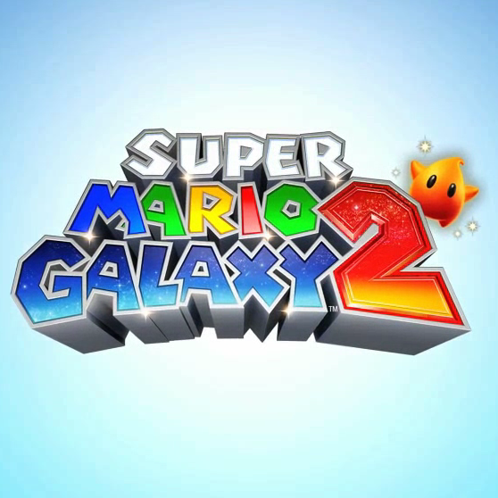

| #5 |
Little Nightmares 1/2 |
 |
8.8/10 |
A well known thing about me is im a sucker for horror, i also love indie games
so this game was really good for me, i love the story, gameplay and intesity, and
im super exited for the third game to release on october.
|
| #4 |
Pokemon: Emerald Version |
 |
8.6/10 |
Definitely and easily the best pokemon game, its sad that its so underrated
as a pokemon game, it probably has the best designs as well in my opinion, the
only reason why i hate it is because its so outdated, if they put newer pokemon
in the 2d style in this game i would definitely like it alot more, this was already
one of my favorite games growing up, i just hate how forgotten its become.
|
| #3 |
Mario Galaxy 2 |
 |
9/10 |
This is some elite ball knowledge right here, i remember playing this on my wii as a kid
everything was on point, the music, the gameplay, it is definitely the best mario game in my
opinion, and i cant wait for the movie to release.
|
| #2 |
Cuphead |
|
9.6/10 |
This game is really good for what it is, for a game that is only 20 dollars i really love
gameplay and effort put into the game, its such a creative game that has left a mark on the world
this is one of the many reasons why i think 2017 was the pinicle of gaming, i love the 2d art that
leaves me stunned whenever i remember that this was a team of 2 brothers and 15 artists that hand drawn
every single animation and background, because i love indie games, especially games that have effort put
into them.
|
| #1 |
Roblox:GRACE |
|
10/10 |
Best game ive ever played, im a sucker for horror games, indie games, and fast paced insanity,
and rougelikes, and this game masterfully merges all of these themes in masterful ways that
makes the game so perfect for me, theres multiple game modes for multiple people so when im bored
of repeating gameplay i can always play something new, unique and different, i love the vibe of
this game and i love how the developers show their love for the game perfectly and its not a pay
to play, in fact theres no pay at all, this is free perfection that blends its horror, lore and
gameplay perfectly to make one of the most fun and stressful games ive ever played.
|